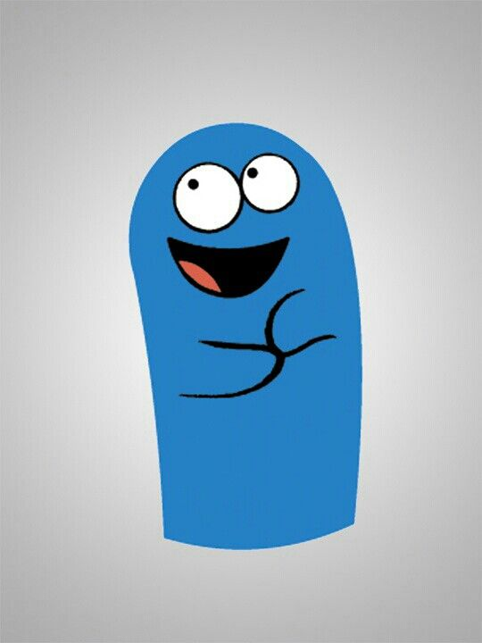

experiencia en matematicas quimica fisica a nivel universitario manejo de programas, idiomas, instrumentos musicales, programacion, psicologia
education
- languages
- japones, ingles, ruso, español(native),hindi
- signatures
- mathematicals, chemestric, fisic,
- tegnologics
- javaescrip, python. anaconda, jupiter, boostrap, html, css, django, webasambly, R, rust, arduino, internet of things
- sofware
- Inventor,comsol,estructural desing-wofware,arcGis, kali linux(whitehacking),electrinican electrical sofware, adobe ilustrator, affterefects,photoshop basic manage
- psycology,leader
- empahasis on color pysology, and industrial,and clinical psycology, ladership in personal work,and manage for multiprocesosr
- personality
- cgeerful,and,funny, buy i am a ideas creator person

Profesional experiencie
languages
japones, ingles, ruso, español(native),hindi
signatures
mathematicals, chemestric, fisic,
tegnologics
javaescrip, python. anaconda, jupiter, boostrap, html, css, django, webasambly, R, rust, arduino, internet of things
sofware
Inventor,comsol,estructural desing-wofware,arcGis, kali linux(whitehacking),electrinican electrical sofware, adobe ilustrator, affterefects,photoshop basic manage
Psycology Leader
empahasis on color pysology, and industrial,and clinical psycology, ladership in personal work,and manage for multiprocesosr
personality
cgeerful,and,funny, buy i am a ideas creator person
Other
- etc
- otros preioms o informacion relevante
- logros o intereses